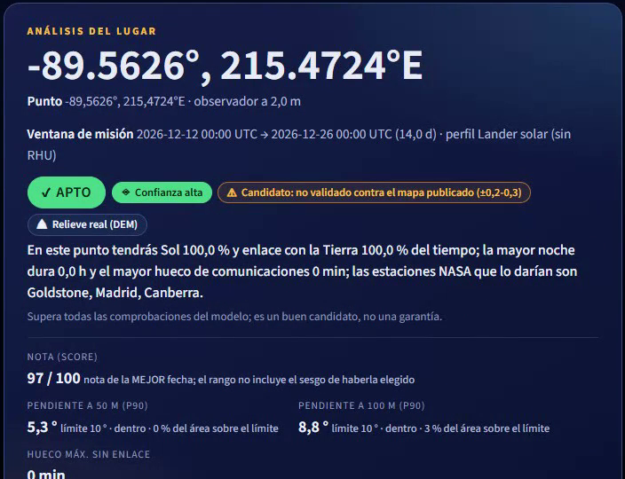
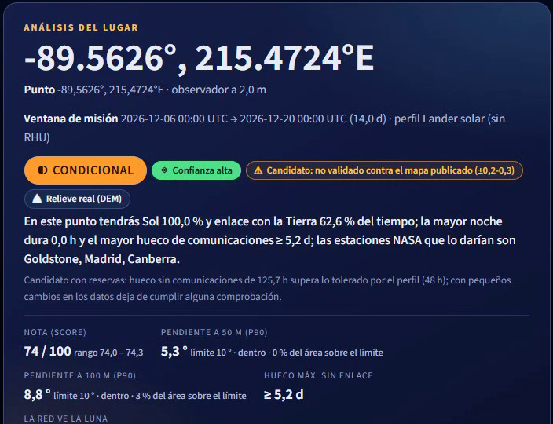
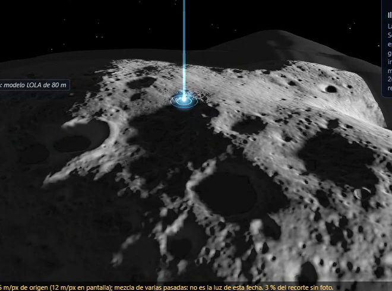

NASA Space Apps 2026 · Lunar Landing Site Navigator
LUNARIS
LUNAR SITE INTELLIGENCE
For any spot near the lunar south pole and any date:
does it see the Sun, does it see the Earth,
and could it actually talk to it?
What makes it different
Same place. Same sunlight. Different start date.

Shackleton, start 12 Dec 2026 — link 100 %, no gap
APTO · 97.4

Same spot, start 6 Dec 2026 — link 62 %, 127 h blackout
CONDICIONAL · 73.9
The Sun is 100 % in both. A mission needs the Earth link to stay up, not just to exist — on 6 Dec it fails the continuity gate.
Timing is the finding
Mons Malapert scores 98.4 — but only 5 of 353 start dates work.
Ranking spots by average light hides the real constraint. LUNARIS evaluates every start date across the year and tells the planner when a site is usable, not just where.
98.4
best-date score, Malapert
5 / 353
start dates that pass all gates
127 h
blackout hidden inside a 100 %-sun site
How it works
Real data in, a defensible verdict out.
DATA
LOLA DEM 5 m and 80 m · SPICE ephemerides · DSN station geometry · LROC imagery
→
PHYSICS
Horizon and shadow per date · panel capacity · Earth line of sight per station
→
GATES G0–G7
Slope, illumination and link continuity (G7: longest gap) → APTO / CONDICIONAL / NO APTO
- Search any crater or type coordinates; suitability score with an uncertainty range.
- Best start date proposed automatically for the mission window.
- Bad results are published on purpose — NO APTO is a result, not an error.
The experience
See the site as a lander would.

3D viewer: real LROC photo on LOLA terrain, true Sun and Earth positions
- Oblique and orbital views of the exact point.
- Observer's-eye view at 2 m: where the Sun and Earth sit on the horizon.
- Says what it cannot show: far terrain is 80 m resolution, micro-relief is procedural.
- Maps, comparison between candidates and a report page.
Scientific honesty
We label what we have not proven.
Candidates, not certified sites.
Top-ranked spots do not match the published illumination map to within ±0.2–0.3. The headline says so on screen.
Declared limits.
Coarse far-field mode error is shown; thermal range 40–250 K for panels; 3D is not photorealistic.
997 automated tests.
Independent check of Sun/Earth geometry against JPL Horizons.
A tool that mission planners can trust is one that tells them where it is unsure.
Open, reproducible, transparent
Try it. Check it. Build on it.
- License: Apache-2.0 (OSI). Data keep their own licences.
- Run it: Python 3.11 ·
pip install -r requirements.txt · streamlit run app.py
- AI disclosure: built with Claude Code (Anthropic, Claude Sonnet 5.5) under the team's direction; scientific numbers come from NASA data and code, not the model.
SOURCES
NASA LOLA (PGDA products 78 & 90) · NAIF SPICE · JPL Horizons · DSN 810-005 · USGS Gazetteer of Planetary Nomenclature · LROC NAC & SDEM · Diviner · three.js · Streamlit
LUNARIS — choose the right place, at the right time, with data.